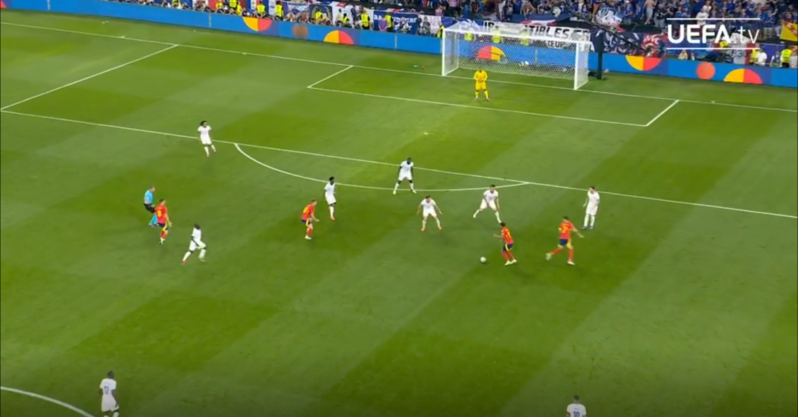

It all started in the Semi final of the EUROS 2024. France were really aggresive towards Spain's defence. It was until the 9th minute that France were able to break it. Ousmane Dembele played a magnifecent pass to Kylian Mbappe on the left wing, which then took a flawless touch with his chest. It was then a 1v1, Mbappe v Navas. Mbappe takes another touch as if he is going to cut in and the shoot with his right foot but suddenly, he plays a beautiful cross right onto Kolo Muani's head. The score then goes from 0-0 to 1-0. Spain fight back and then in the 21st minute, Spain break in. Navas plays a ball through the middle to Dani Olmo, which is then aggresively pressed by 2 French Players. So, he trys to relieve the pressure by passing to Morata, but fails miserably because Saliba intercepts the pass and the ball ends up on Lamine Yamal's feet. Midfielder, Adrien Rabiot, trys to press, seemingly not letting anything get past him but, Yamal has other plans. He performs a subtle body drop to the right that does not fool Rabiot in the slightest. As Rabiot commited to the fake, Yamal instantly chopped the ball back onto his left foot which confuses Rabiot, causing Yamal to have the perfect chance to shoot. He shoots. The ball flys through the air, curving into the top right corner, impossible for Maignan to save.
